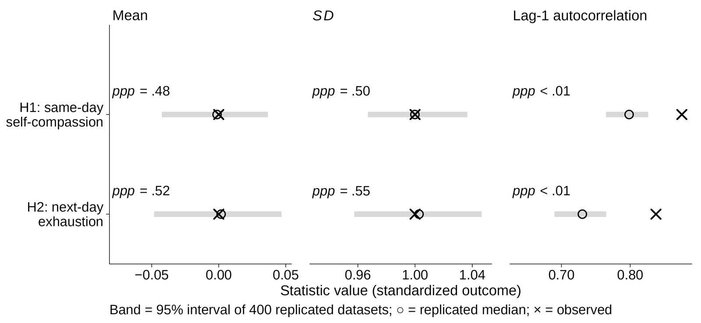
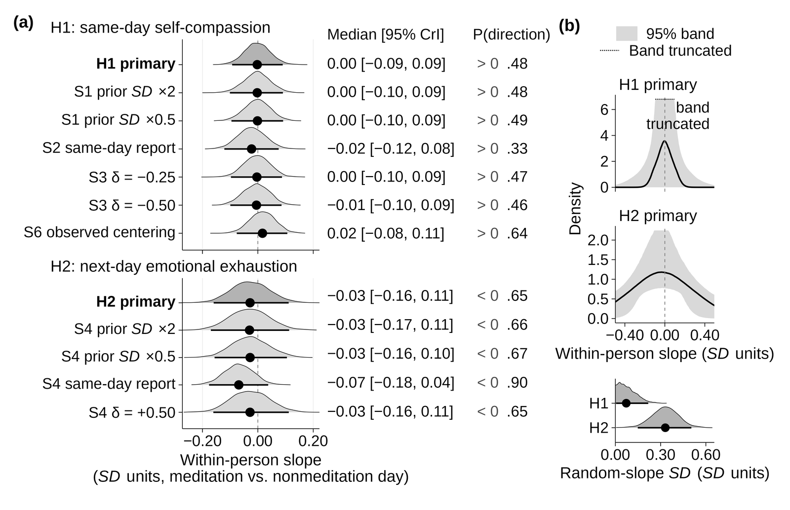

Summary
Evaluations of brief self-compassion programs usually compare phases of the program, which leaves open whether a person’s meditation days differ from their nonmeditation days. This paper is a secondary analysis of an archival 28-day diary of 65 employees in a two-week online self-compassion meditation program (Li et al., 2021). Each morning of the two intervention weeks, participants reported whether they had meditated in the previous 24 hours, and each evening they rated self-compassion, perceived stress, and emotional exhaustion. The original report used the meditation item to describe compliance, not as a predictor.
Across the 14 intervention days (910 person-days), a prespecified Bayesian two-level model treated each person’s meditation tendency as latent, so that the within-person contrast between meditation and nonmeditation days was separated from stable differences in how often people meditated. That choice matters here because nonmeditation days were few: 678 meditation reports, 132 nonmeditation reports, and 100 missing reports, with 12 participants who had no nonmeditation day at all. The within-person meditation slope for same-day self-compassion had a posterior median of 0.00 SD, 95% CrI [−0.09, 0.09], P(b > 0) = .48. For next-day emotional exhaustion, adjusting for same-day exhaustion, the slope was −0.03 SD, 95% CrI [−0.16, 0.11], P(b < 0) = .65. Both intervals spanned zero. Within the intervention period, there is little evidence that the program’s changes were concentrated on the days on which participants actually meditated.
Figures


What this does not show
Whether practice helps at all. The same-day contrast cannot detect a benefit that accumulates over days and persists on days without practice, and the single-group design cannot separate the program’s changes from time, expectation, and self-monitoring. Participants also chose when to practice, so unmeasured daily demands could confound the association; a design that randomizes practice days would be needed to identify day-level effects. The sample was 65 snowball-sampled Chinese employees who met a seven-meditation-day minimum, and the underpredicted lag-1 autocorrelation in Figure 1 means the slope intervals may be too narrow.
Links
- Preprint: PsyArXiv, https://osf.io/preprints/psyarxiv/986ht_v1.
- Protocol, Stan model, and analysis code: https://github.com/mjmonnot/selfcompassion-diary-preprint
- Data (original study’s deposit, Li, 2021): https://osf.io/pqf6v/
Monnot, M. J. (2026). Does daily meditation increase self-compassion? A Bayesian multilevel diary study. PsyArXiv. Preprint: PsyArXiv, https://osf.io/preprints/psyarxiv/986ht_v1.